Publications & Working Papers
This section presents my peer-reviewed publications. Additional information, PDFs, and data repositories are linked when available. Click ABS to view the abstract, or Cite for a BibTeX entry.
2026
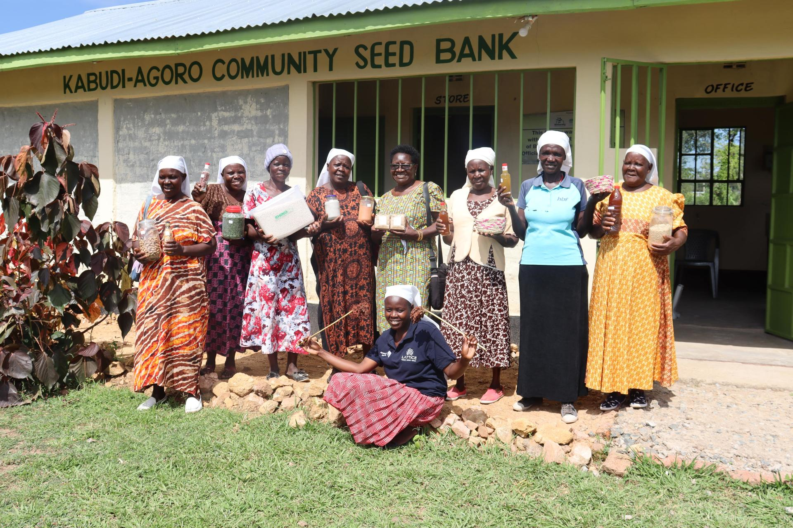
Community seed banks deliver social cohesion and peacebuilding in conflict-affected, climate-vulnerable agricultural contexts: a study from northern Ethiopia
Peace and Sustainability, 100049, 2026. Elsevier (NERPS)
Sub-Saharan Africa's rural communities are increasingly exposed to the compound pressures of climate variability and armed conflict, which erode livelihoods, disrupt institutions, and weaken social cohesion. Community Seed Banks (CSBs), initially designed to conserve agrobiodiversity and improve seed access, are increasingly functioning as grassroots institutions with broader social roles that strengthen social resilience and support peacebuilding. This study employed a three-stage least squares (3SLS) estimation to investigate how CSBs influence six social cohesion dimensions, namely trust, unity, communication flow, social interaction, conflict resolution, and perceived security, in three conflict-affected, climate-vulnerable rural communities (Ayba, Melfa, Wakaye) in northern Ethiopia. Using original survey data from 393 households, we identify significant but differentiated effects of CSB membership. Results suggest that CSB affiliation in Ayba and Wakaye correlates with higher trust and improved communication, interpersonal interaction, and conflict resolution capacity. These findings posit that, as locally rooted institutions, CSBs contribute to community-led adaptation, peacebuilding, and social cohesion beyond mere seed conservation, bridging environmental peacebuilding frameworks with critical political ecology.
@article{ngaiwi2026seedbanks,
author = {Ngaiwi, Mary Eyeniyeh and Buritic{\'a} Casanova, Alexander and Gonz{\'a}lez, Carolina and Fadda, Carlo and Garc{\'i}a-Conejero, Elena and Castro-Nunez, Augusto Carlos},
title = {Community seed banks deliver social cohesion and peacebuilding in conflict-affected, climate-vulnerable agricultural contexts: a study from northern Ethiopia},
journal = {Peace and Sustainability},
year = {2026},
doi = {10.1016/j.nerpsj.2026.100049}
}
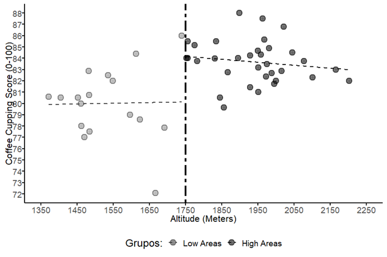
Coffee cupping as a quality signal: Impacts on smallholder prices and market access in Colombia
Journal of Agribusiness in Developing and Emerging Economies, pp. 1–24, 2026
This paper examines the role of coffee cupping protocols as quality signals in Colombian specialty coffee markets. Using data from smallholder producers, we evaluate whether participation in cupping, a standardized sensory evaluation, translates into higher farmgate prices and improved market access. Results indicate that cupping scores serve as an effective signaling mechanism, generating significant price premiums for producers who participate. However, barriers to participation, including geographic isolation, limited technical capacity, and costs of quality certification, disproportionately exclude the smallest producers, raising concerns about equity in quality-driven value chains.
@article{buritica2026cupping,
author = {Buritic{\'a} Casanova, Alexander and Gonz{\'a}lez, Carolina},
title = {Coffee cupping as a quality signal: Impacts on smallholder prices and market access in Colombia},
journal = {Journal of Agribusiness in Developing and Emerging Economies},
year = {2026},
doi = {10.1108/JADEE-05-2025-0217}
}
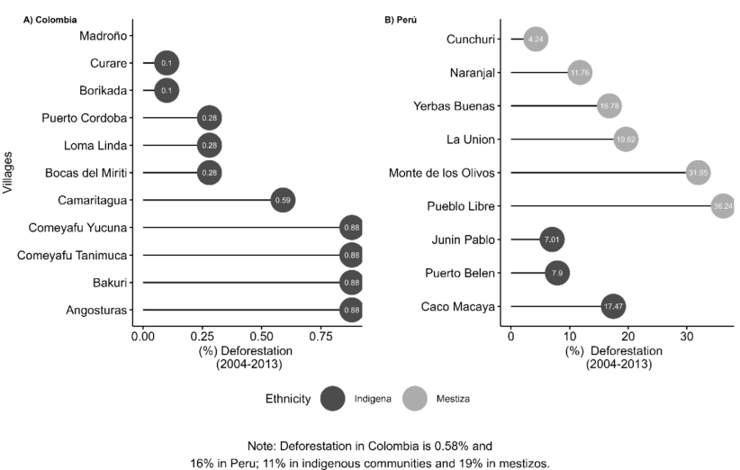
Food security and forest access in the Colombian and Peruvian Amazon
Food Security, 2026. Springer
This study investigates the relationship between forest access and food security in indigenous and non-indigenous communities of the Colombian and Peruvian Amazon. Using household-level survey data and dietary diversity indicators, we find that forest quality and ethnic group membership are significant determinants of food security outcomes. Communities with better forest access exhibit higher dietary diversity, and indigenous households rely more heavily on forest-based food sources. The findings underscore the importance of integrating forest conservation into food security strategies in Amazonian contexts.
@article{buritica2026foodsecurity,
author = {Buritic{\'a} Casanova, Alexander and Vanegas, Martha and Espada, Andres and Ngaiwi, Mary and Pierce, Deborah and Quintero, Marcela},
title = {Food security and forest access in the Colombian and Peruvian Amazon},
journal = {Food Security},
year = {2026},
doi = {10.1007/s12571-025-01639-0}
}
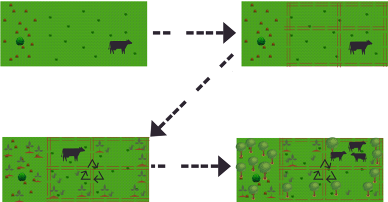
Advancing sustainable silvopastoral practices for achieving zero deforestation in the Colombian Amazon
Agricultural Systems, vol. 231, 104525, 2026
This paper evaluates the adoption and effectiveness of silvopastoral practices as a strategy for achieving zero deforestation in the Colombian Amazon. Using farm-level data from Caquetá, we assess whether silvopastoral systems reduce deforestation pressure while maintaining or improving livestock productivity. Results show that adopters of silvopastoral practices exhibit significantly lower rates of forest clearing and higher milk yields per hectare, suggesting that sustainable intensification can be compatible with conservation goals in frontier regions.
@article{buritica2026silvopastoral,
author = {Buritic{\'a} Casanova, Alexander and Ngaiwi, Mary and Moreno, Manuel and Gonz{\'a}lez, Carolina and Castro-Nunez, Augusto},
title = {Advancing sustainable silvopastoral practices for achieving zero deforestation in the Colombian Amazon},
journal = {Agricultural Systems},
volume = {231},
pages = {104525},
year = {2026},
doi = {10.1016/j.agsy.2025.104525}
}
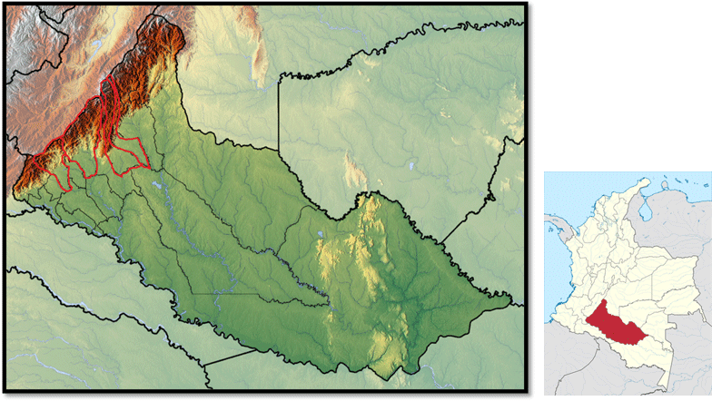
Using landscape approaches to understand peacebuilding policy coherence: a case study of Caquetá, Colombia
Ecology and Society, vol. 31(2):1, 2026
We analyzed policy coherence within the Colombian Integrated Rural Reform (Reforma Rural Integral; RRI) peacebuilding policy, using landscape approaches (LAs). Landscape approaches link agricultural practices, institutions, and policies, providing an effective conceptual framework for coherence in policy objectives, instruments, and implementation for effective landscape governance. We empirically examined coherence across and within the RRI, as well as the extent to which the RRI is consistent with LAs. We analyzed the programs with a focus on territorial development (PDETs), and the RRI's implementation mechanism in four municipalities in the Department of Caquetá, Colombia. The study identified incoherence within PDET initiatives and problem and vision statements, specifically regarding land initiatives, although stronger coherence was noted between the RRI and PDET vision statements. Our findings show that the current peacebuilding policy instruments in Colombia fall short of being consistent with LAs, especially in principles concerned with participation and rights in implementation.
@article{pierce2026landscape,
author = {Pierce, Deborah A. and Collazos Acosta, Sara E. and Howland, Fanny and Buritic{\'a} Casanova, Alexander and Castro-Nunez, Augusto},
title = {Using landscape approaches to understand peacebuilding policy coherence: a case study of Caquet{\'a}, Colombia},
journal = {Ecology and Society},
volume = {31},
number = {2},
pages = {1},
year = {2026},
url = {https://www.ecologyandsociety.org/vol31/iss2/art1/}
}
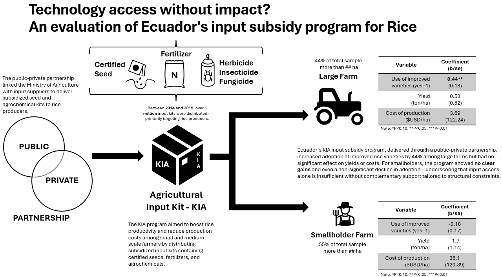
Technology access without impact? An evaluation of Ecuador's input subsidy program for rice
Cogent Food & Agriculture, vol. 12(1), 2651483, 2026
This study assesses Ecuador's Agricultural Input Kit (KIA) program, which distributed over 1 million subsidized packages of certified seeds, fertilizers, and agrochemicals to improve rice productivity. Using household survey data collected in two waves (2014/2015 and 2019/2020), we estimate causal effects on adoption, yields, and costs using a Difference-in-Differences approach with Propensity Score Matching. Results show a 37% increase in improved variety adoption among large farms, but no significant yield effects and an 18% decline in adoption among smallholders. These heterogeneous impacts reflect persistent constraints including credit inaccessibility, lack of irrigation, and weak extension systems.
@article{buritica2026ecuador,
author = {Buritic{\'a} Casanova, Alexander and Mar{\'i}n Salazar, Diego Armando and Fajardo Reyes, Nicol{\'a}s and Andrade, Robert},
title = {Technology access without impact? An evaluation of Ecuador's input subsidy program for rice},
journal = {Cogent Food \& Agriculture},
volume = {12},
number = {1},
pages = {2651483},
year = {2026},
doi = {10.1080/23311932.2026.2651483}
}
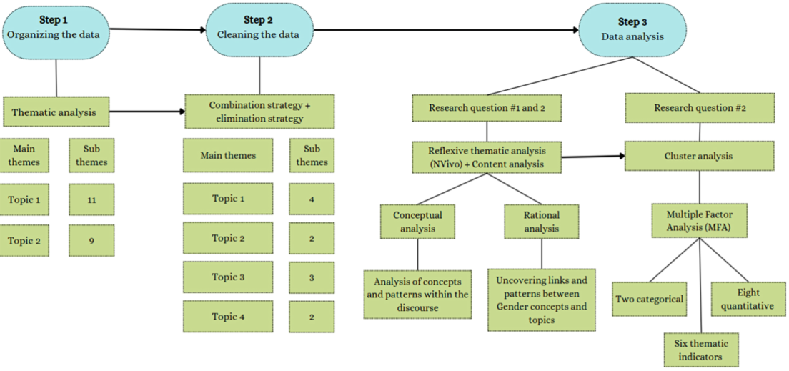
Rural women's voices and gender dynamics in Colombian land restitution policy: A case study review in Valle del Cauca, Colombia
Journal of Rural Studies, vol. 124, 104167, 2026
Colombia's Land Restitution Program seeks to restore land rights to millions displaced by decades of armed conflict. Through a gender lens, this study examines how the design and implementation of the program shapes policy outcomes and women's experiences. We apply qualitative methods and cluster analysis to in-depth interviews with 19 female beneficiaries in Valle del Cauca. Cluster analysis reveals three patterns: women formally restituted but materially excluded, women compensated but with unmet needs, and women achieving substantial empowerment. The study finds that policies may symbolically include women but frequently fail to enable real empowerment, particularly when intersectional factors such as age and household category are ignored.
@article{blanco2026restitution,
author = {Blanco, Maria and Howland, Fanny and Buritic{\'a} Casanova, Alexander and Gonz{\'a}lez, Carolina},
title = {Rural women's voices and gender dynamics in Colombian land restitution policy: A case study review in Valle del Cauca, Colombia},
journal = {Journal of Rural Studies},
volume = {124},
pages = {104167},
year = {2026},
doi = {10.1016/j.jrurstud.2026.104167}
}
Impact of community seed banks on seed security and food access outcomes in Ethiopia
Discover Sustainability, 2026. Springer Nature (Open Access)
Community Seedbanks (CSBs) have emerged as a vital grassroots intervention for enhancing seed security and food resilience, particularly in conflict-affected and climate-vulnerable regions. This study evaluates the impact of CSBs on seed security and food access outcomes in Ethiopia using a multinomial logit analysis. Results reveal that CSB participation significantly improves seed access and dietary diversity among smallholder households, with heterogeneous effects across conflict-affected and non-conflict areas.
@article{ngaiwi2026impact,
author = {Ngaiwi, Mary Eyeniyeh and Buritic{\'a} Casanova, Alexander and Gonz{\'a}lez, Carolina and Kassahun Dejene, Mengistu and Bomdzele, Eric Junior and Gotor, Elisabetta and Castro-Nunez, Augusto Carlos},
title = {Impact of community seed banks on seed security and food access outcomes in Ethiopia},
journal = {Discover Sustainability},
year = {2026},
doi = {10.1007/s43621-026-03209-6}
}
2025
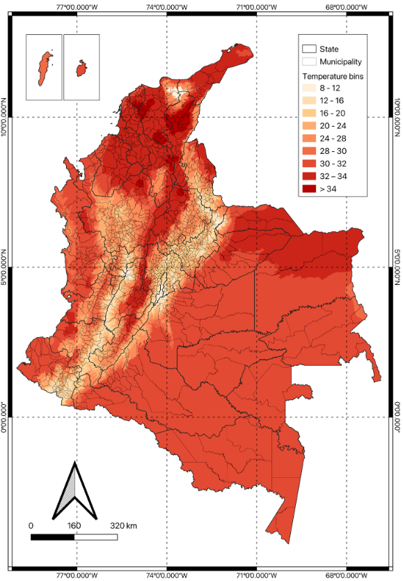
Sweating bullets: Heat, high-stakes evaluations, and the role of incentives
Environmental and Resource Economics, vol. 88(9), pp. 2429–2467, 2025
This paper examines the causal effect of heat exposure on performance in high-stakes evaluations. Using administrative data from national standardized exams in Colombia and exogenous temperature variation, we estimate significant negative effects of heat on test scores. We further explore whether financial incentives can mitigate the cognitive costs of heat exposure, finding heterogeneous effects across socioeconomic groups. The results have implications for climate adaptation policies in education and for understanding the broader welfare costs of rising temperatures.
@article{martinez2025heat,
author = {Martinez, Jose Maria and Zuluaga, Victor and Buritic{\'a} Casanova, Alexander},
title = {Sweating bullets: Heat, high-stakes evaluations, and the role of incentives},
journal = {Environmental and Resource Economics},
volume = {88},
number = {9},
pages = {2429--2467},
year = {2025},
doi = {10.1007/s10640-025-01011-y}
}
2024
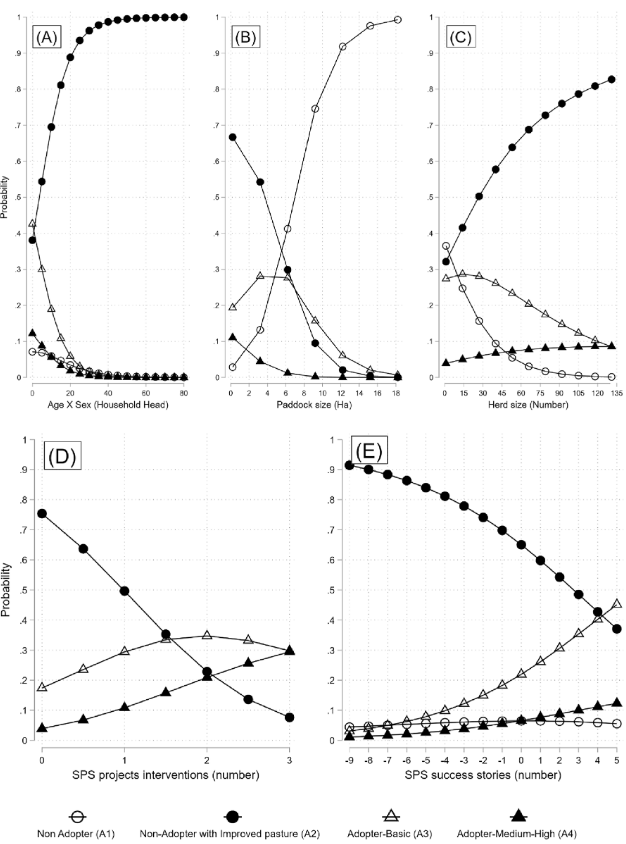
Unlocking sustainable livestock production potential in the Colombian Amazon through paddock division and gender inclusivity
Scientific Reports, vol. 14(1), 13644, 2024
This study evaluates the impact of paddock division and gender-inclusive training programs on livestock productivity and sustainability in the Colombian Amazon. Using data from a randomized intervention in Caquetá, we find that paddock division significantly increases milk production per hectare while reducing land degradation. Farms with women's active participation in management decisions show additional productivity gains, highlighting the role of gender inclusivity in sustainable agricultural intensification.
@article{castronunez2024livestock,
author = {Castro-Nunez, Augusto and Buritic{\'a} Casanova, Alexander and Holmann, Federico and Ngaiwi, Mary and Quintero, Marcela and Solarte, Antonio and Gonz{\'a}lez, Carolina},
title = {Unlocking sustainable livestock production potential in the Colombian Amazon through paddock division and gender inclusivity},
journal = {Scientific Reports},
volume = {14},
number = {1},
pages = {13644},
year = {2024},
doi = {10.1038/s41598-024-63697-2}
}
2021
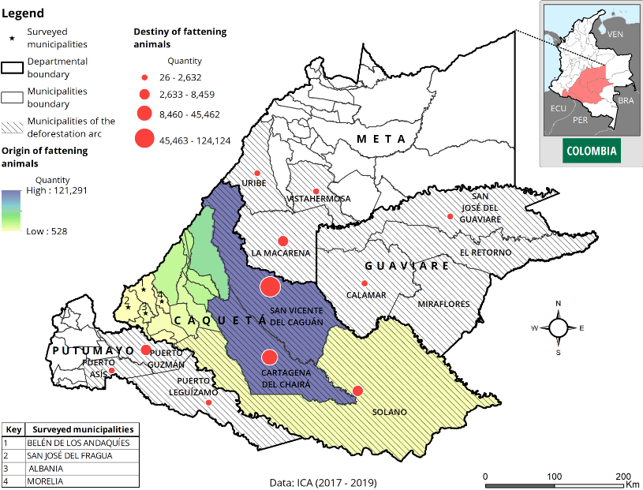
The risk of unintended deforestation from scaling sustainable livestock production systems
Conservation Science and Practice, vol. 3(9), e495, 2021
Scaling sustainable livestock production systems is widely promoted as a strategy to reduce deforestation. However, productivity gains may also incentivize herd expansion and land clearing. This paper assesses the risk of unintended deforestation from scaling silvopastoral and improved pasture systems in the Colombian Amazon. Using spatially explicit data and scenario analysis, we identify conditions under which intensification leads to rebound effects, and discuss policy safeguards to ensure that productivity gains translate into genuine conservation outcomes.
@article{castronunez2021deforestation,
author = {Castro-Nunez, Augusto and Buritic{\'a} Casanova, Alexander and Gonz{\'a}lez, Carolina and Villarino, Eliza and Holmann, Federico},
title = {The risk of unintended deforestation from scaling sustainable livestock production systems},
journal = {Conservation Science and Practice},
volume = {3},
number = {9},
pages = {e495},
year = {2021},
doi = {10.1111/csp2.495}
}
2017
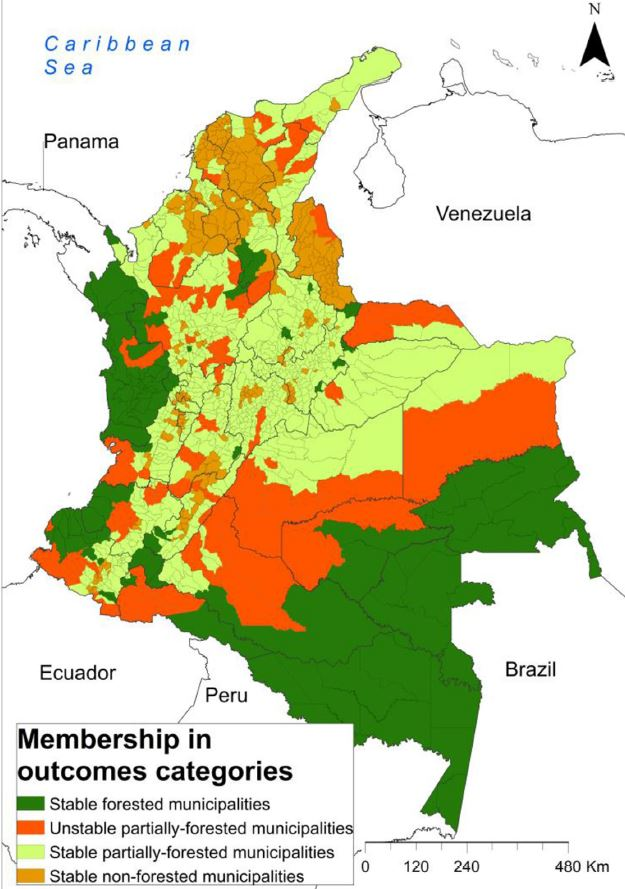
Land-related grievances shape tropical forest cover in areas affected by armed conflict
Applied Geography, vol. 85, pp. 39–50, 2017
This paper examines how land-related grievances associated with armed conflict influence tropical forest cover in Colombia. Using spatial econometric methods and panel data from conflict-affected municipalities, we find that areas with higher incidences of land dispossession and forced displacement experienced greater deforestation. The results highlight the importance of addressing land tenure grievances as part of integrated strategies for peacebuilding and environmental conservation in post-conflict settings.
@article{castronunez2017grievances,
author = {Castro-Nunez, Augusto and Mertz, Ole and Buritic{\'a} Casanova, Alexander and Sosa, Chrystian C. and Lee, Stephanie T.},
title = {Land-related grievances shape tropical forest cover in areas affected by armed conflict},
journal = {Applied Geography},
volume = {85},
pages = {39--50},
year = {2017},
url = {https://www.sciencedirect.com/science/article/abs/pii/S0143622817301662}
}
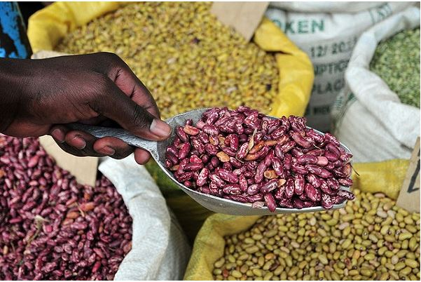
Identifying socioeconomic characteristics defining consumers' acceptance for main organoleptic attributes of an iron-biofortified bean variety in Guatemala
International Journal on Food System Dynamics, vol. 8(3), pp. 222–235, 2017
This paper identifies the socioeconomic characteristics that influence consumers' acceptance of key organoleptic attributes (taste, texture, color, and cooking time) of an iron-biofortified bean variety in Guatemala. Using discrete choice experiments and multinomial logit models, we find that household income, education, and prior familiarity with bean varieties significantly predict willingness to accept biofortified alternatives. The findings provide actionable insights for targeting and marketing strategies aimed at improving micronutrient intake through biofortification programs.
@article{perez2017biofortified,
author = {P{\'e}rez, Salom{\'o}n and Buritic{\'a} Casanova, Alexander and Oparinde, Adewale and Birol, Ekin and Gonz{\'a}lez, Carolina and Zeller, Manfred},
title = {Identifying socioeconomic characteristics defining consumers' acceptance for main organoleptic attributes of an iron-biofortified bean variety in Guatemala},
journal = {International Journal on Food System Dynamics},
volume = {8},
number = {3},
pages = {222--235},
year = {2017},
url = {https://brill.com/view/journals/fsd/8/3/article-p222_4.xml}
}
2016
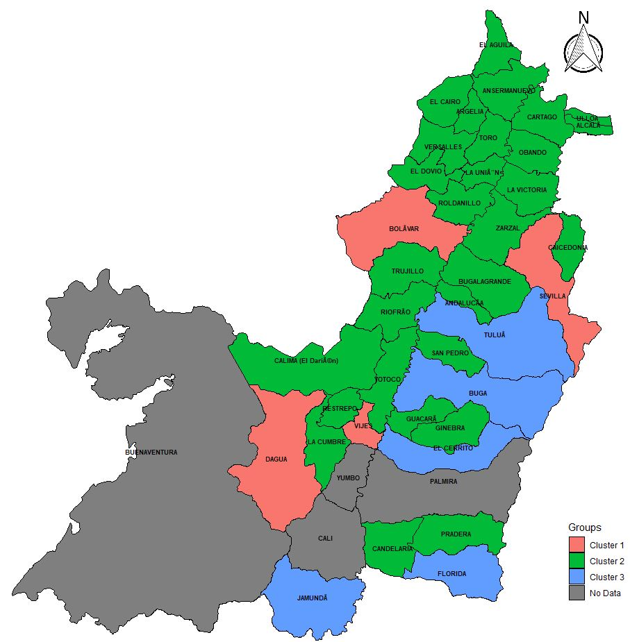
Gestión ambiental y gobernanza en los municipios del Valle del Cauca
Ambiente y Sostenibilidad, vol. 5, pp. 78–96, 2016
Este artículo analiza la gestión ambiental y la gobernanza en los municipios del Valle del Cauca, Colombia. Se evalúa la capacidad institucional de los gobiernos locales para implementar políticas ambientales y se identifican los factores que determinan la efectividad de la gestión ambiental municipal. Los resultados muestran una heterogeneidad significativa en las capacidades institucionales, con municipios más pequeños enfrentando mayores restricciones presupuestales y técnicas para cumplir con sus obligaciones ambientales.
@article{buritica2016gestion,
author = {Buritic{\'a}-Casanova, Alexander and Arias-Arbelaez, Fabio},
title = {Gesti{\'o}n ambiental y gobernanza en los municipios del Valle del Cauca},
journal = {Ambiente y Sostenibilidad},
volume = {5},
pages = {78--96},
year = {2016},
url = {https://revistaambiente.univalle.edu.co/index.php/ays/article/view/4304/6524}
}
2015
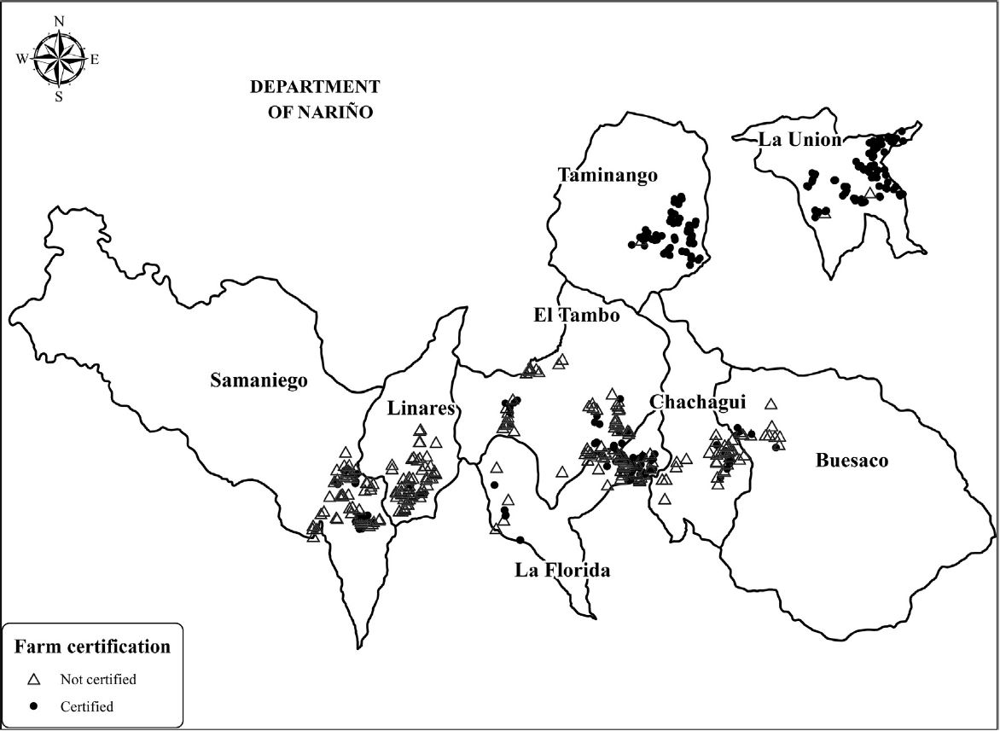
The effect of specialty coffee certification on household livelihood strategies and specialisation
Food Policy, vol. 57, pp. 13–25, 2015
This paper examines the effect of specialty coffee certification on household livelihood strategies and agricultural specialisation among smallholder coffee producers in Colombia. Using survey data and propensity score matching, we find that certified households exhibit higher levels of coffee specialisation and derive a larger share of income from coffee production. However, certification does not uniformly improve overall household welfare, suggesting that the benefits of certification are mediated by market access conditions and household-level characteristics.
@article{vellema2015certification,
author = {Vellema, Wytse and Buritic{\'a} Casanova, Alexander and Gonz{\'a}lez, Carolina and D'Haese, Marijke},
title = {The effect of specialty coffee certification on household livelihood strategies and specialisation},
journal = {Food Policy},
volume = {57},
pages = {13--25},
year = {2015},
url = {https://www.sciencedirect.com/science/article/pii/S0306919215000810}
}
Working Papers
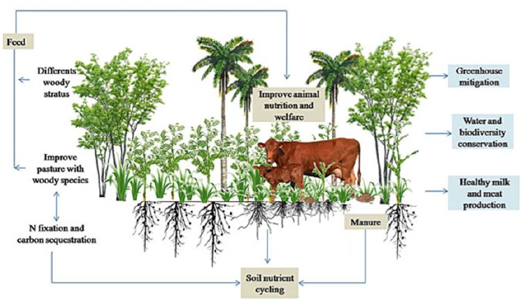
Silvopastoral systems in practice: Evidence from a dairy value chain intervention in Caquetá, Colombia
Working Paper
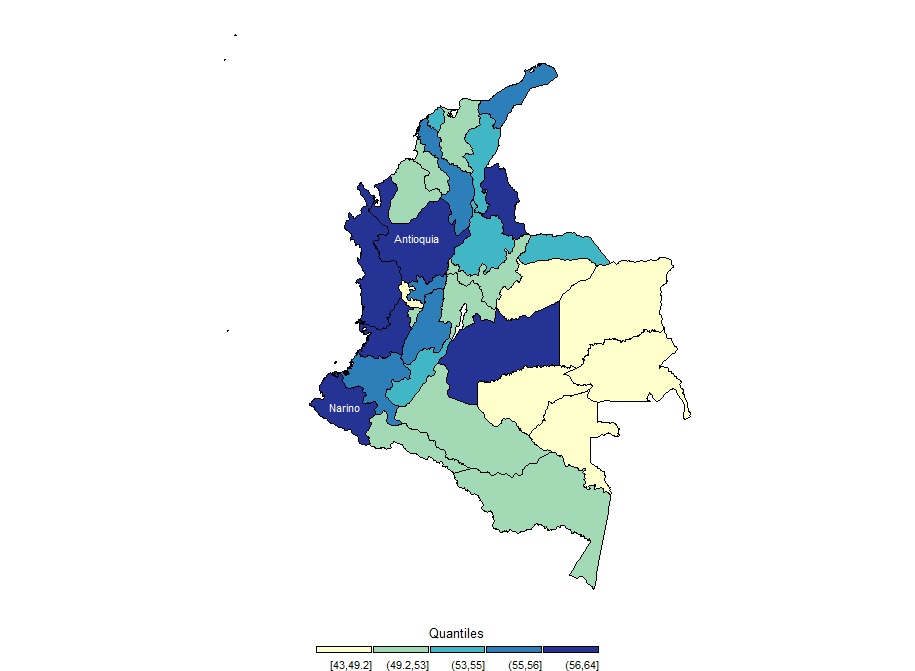
Gendered dynamics in Colombian public policy: Assessing impact and investment towards equitable development
Working Paper